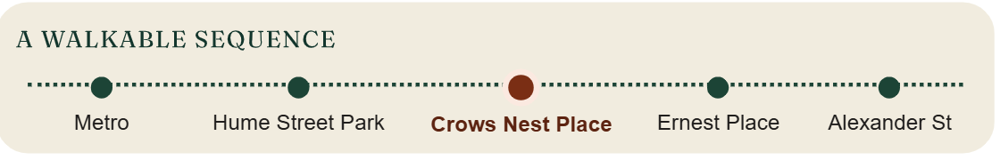
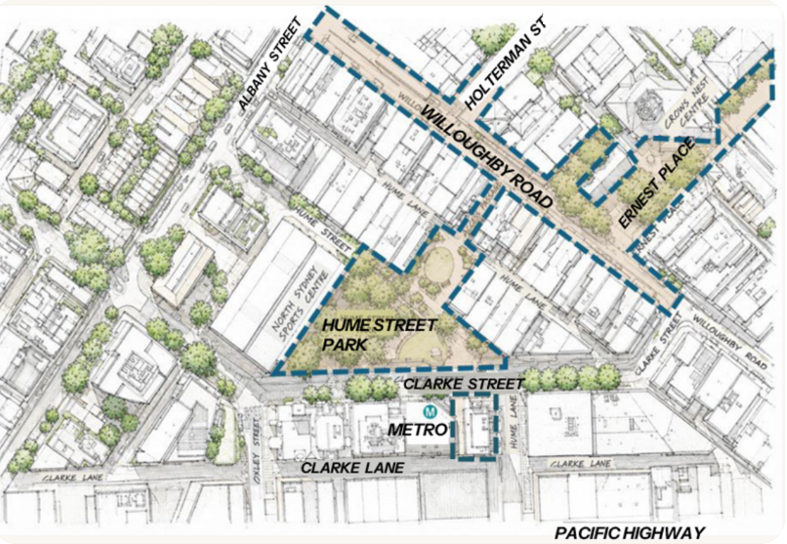

Your questions about Crows Nest Place
Everything you need to know about how Crows Nest Place would work — access, open space, impact on local business and council support.
Would Crows Nest Place be just for pedestrians? Would any vehicles be allowed?
Yes. It is a mandatory requirement that emergency vehicles like ambulances, fire trucks and police vehicles are able to access a pedestrian precinct like Crows Nest Place. This can be achieved by devices such as retractable bollards. No regular vehicles or buses will be allowed.
Will Crows Nest Place connect the existing open spaces in Crows Nest?
Yes. It will create a walkable sequence from the Crows Nest Metro connecting Stage 2 of Hume Street Park to the Hume Street Park plaza, through to Willoughby Road and onto Ernest Place. Crows Nest Place will add more than 4,300 sqm of open space, bringing the total activated public space in the precinct to approximately 11,300 sqm.


Will Crows Nest Place help to underpin the night-time economy in Crows Nest? If so, how?
Yes. Crows Nest Place would underpin the night-time economy by enabling restaurants and cafés to: expand their outdoor dining; host live acoustic music and community performances; and stage community banquet events and local markets. It creates family-friendly evening spaces, draws more people before and after dining, invites those arriving via the nearby Metro station to linger in the precinct, and supports local businesses through foot traffic rather than vehicle throughput.
Will Willoughby Road businesses be adversely affected by the loss of car spaces in Crows Nest Place?
No. There are currently 29 car spaces shared by more than 70 businesses in the strip between Clarke Street and Albany Street. Multiple studies demonstrate that pedestrianising a street typically increases foot traffic by around 30% and retail sales by at least 40% more overall in a month. That's because shoppers 'on foot' linger longer and spend more.
Shoppers who traditionally park on Willoughby Road in this strip will be able to park in the Holtermann Street Carpark, which is a very short walk to Willoughby Road. The Woolies carpark is also a short walk from this strip.
Will businesses still be able to get deliveries? What about courier pick-ups for e.g. takeaway food?
Yes. All the businesses in the proposed pedestrianised strip have back lane access where deliveries can be made. Pick-ups could still be done by couriers on foot, or by vehicle or bicycle via the back lanes. North Sydney Council would need to establish commercial loading zones in these back lanes.
Does North Sydney Council support the concept of pedestrianising a section of Willoughby Road?
Yes. The Council views open space as a priority for Crows Nest and intends to embed pedestrianisation of Willoughby Road in its master plan for Crows Nest. The Council will commence its master planning process for Crows Nest in late 2026. Investigation of the proposal is already included in North Sydney Council's Delivery Plan (2026/29) with a study for the closure budgeted this financial year (2026/27).